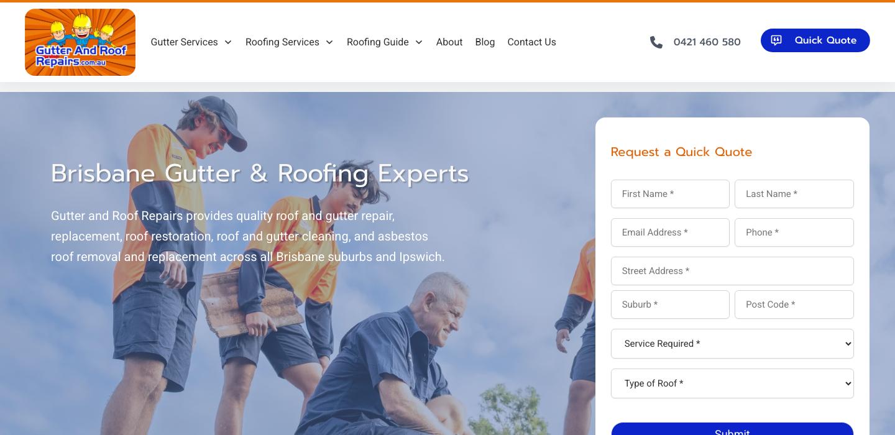

Internal Audit Report · ProfitsLocal
Gutter and Roof Repairs
roofer ·Brisbane · ★ 4.6 (150 reviews)
总体判断
审计概览
audit_score=69 → moderate_candidate · weakest: seo 31, visual 50 · fired: high_traction_old_site
已触发 hard triggers
联系方式 + GBP 快照
商家档案
independent_https_site六维度评分总览
每个维度的强弱在哪
现场证据 · 桌面 + 移动
客户访问时看到的页面


主要问题 · 3 项
影响转化的明显短板
homepage_title_clear
命中原因title='# Brisbane Gutter & Roof Repairs' contains-name=true contains-niche=false
证据截图 · Desktop 600px region
h1_unique
命中原因3 <h1> tags
证据 · 3 <h1> tag(s) found
<h1 class="" style="" data-css="tve-u-189048aae16"><br></h1><h1 data-css="tve-u-189048aae16" style="color: var(--tcb-skin-color-22) !important; --tcb-applied-color: var$(--tcb-skin-color-22) !important;" class="">Brisbane Gutter & Roof Repairs</h1><h1 class="" data-css="tve-u-189d1fa359b" style="text-align: left;">Brisbane Gutter & Roofing Experts</h1>local_schema_markup
命中原因no LocalBusiness JSON-LD
证据 · 2 JSON-LD block(s) found
{"@context":"https:\/\/schema.org","@graph":[{"@type":"WebPage","@id":"https:\/\/gutterandroofrepairs.com.au\/","url":"https:\/\/gutterandroofrepairs.com.au\/","name":"Gutter and Roof Repairs | Brisbane Gutter & Roofing Experts","isPartOf":{"@id":"https:\/\/gutterandroofrepairs.com.au\/#website"},"about":{"@id":"https:\/\/gutterandroofrepairs.com.au\/#organization"},"primaryImageOfPage":{"@id":"https:\/\/gutterandroofrepairs.com.au\/#primaryimage"},"image":{"@id":"https:\/\/gutterandroofrepairs.com.au\/#primaryimage"},"thumbnailUrl":"https:\/\/gutterandroofrepairs.com.au\/wp-content\/uploads\/2023\/07\/ute-cutout.webp","datePublished":"2023-06-26T02:09:20+00:00","dateModified":"2025-08-15T05:43:27+00:00","description":"Gutter and Roof Repairs provide quality roof and gutter repair, replacement, and restoration across Brisbane and Ipswich.","breadcrumb":{"@id":"https:\/\/gutterandroofrepairs.com.au\/#breadcrumb"},"inLanguage":"en-AU","potentialAction":[{"@type":"ReadAction","target":["https:\/\/gutterandroofrepairs.com.au\/"]}]},{"@type":"ImageObject","inLanguage":"en-AU","@id":"https:\/\/gutterandroofrepairs.com.au\/#primaryimage","url":"https:\/\/gutterandroofrepairs.com.au\/wp-content\/uploads\/2023\/07\/ute-cutout.webp","contentUrl":"https:\/\/gutterandroofrepairs.com.au\/wp-content\/uploads\/2023\/07\/ute-cutout.webp","width":600,"height":192,"caption":"Gutter and Roof Repairs ute with logo"},{"@type":"BreadcrumbList","@id":"https:\/\/gutterandroofrepairs.com.au\/#breadcr
{
"@context": "https://schema.org",
"@graph": [
{
"@type": "RoofingContractor",
"@id": "https://gutterandroofrepairs.com.au/#organization",
"name": "Gutter and Roof Repairs",
"url": "https://gutterandroofrepairs.com.au/",
"image": "https://gutterandroofrepairs.com.au/wp-content/uploads/2025/06/Jason-and-Ethan-Wilson-of-Gutter-and-Roof-Repairs-standing-in-front-of-company-truck.jpg",
"logo": "https://gutterandroofrepairs.com.au/wp-content/uploads/2025/06/Jason-and-Ethan-Wilson-of-Gutter-and-Roof-Repairs-standing-in-front-of-company-truck.jpg",
"email": "info@gutterandroofrepairs.com.au",
"telephone": "+61 421 460 580",
"address": {
"@type": "PostalAddress",
"addressLocality": "Brisbane",
"addressRegion": "QLD",
"addressCountry": "AU"
},
"areaServed": [
{ "@type": "City", "name": "Brisbane" },
{ "@type": "City", "name": "Ipswich" },
{ "@type": "AdministrativeArea", "name": "Redlands" },
{ "@type": "AdministrativeArea", "name": "Logan" },
{ "@type": "AdministrativeArea", "name": "Caboolture" }
],
"memberOf": [
{ "@type": "Organization", "name": "Master Builders Queensland", "url": "https://www.mbqld.com.au/" }
],
"qualifications": "QBCC Licence: 1304235",
"aggregateRating": {
"@type": "AggregateRating",
"ratingValue": 4.5,
"ratingCount": 129,
"reviewCount": 129,
规则细节 · 39 项明细
每条规则的命中与失分原因
Google Business Profile 61/100 8 规则
| 规则 | 命中 | 得分 | 原因 |
|---|---|---|---|
has_website_link | ✓ | 10/10 | website: https://gutterandroofrepairs.com.au/ |
review_volume_vs_peers | ✓ | 25/25 | 150 reviews |
average_rating | ✓ | 10/10 | ★4.6 |
has_hours | ✗ | 0/5 | no hours |
image_count | ✓ | 6/10 | 5 images |
has_business_description | ✓ | 10/10 | description present |
has_service_area | ✗ | 0/15 | no service area |
owner_replies_to_reviews | — | 0/15 | reply rate not enriched |
Technical 65/100 7 规则
| 规则 | 命中 | 得分 | 原因 |
|---|---|---|---|
https_enabled | ✓ | 20/20 | https |
first_paint_under_3s | — | 0/25 | LCP not measured (need Playwright/Lighthouse) |
mobile_responsive | ✓ | 30/30 | lighthouse mobile 80 |
core_web_vitals_pass | — | 0/10 | CWV not measured |
form_submittable | ✓ | 5/5 | form submits |
no_console_errors | ✓ | 5/5 | 0 console errors |
favicon_and_meta | ✓ | 5/5 | favicon: yes, meta: yes |
UX & Conversion 90/100 7 规则
| 规则 | 命中 | 得分 | 原因 |
|---|---|---|---|
above_fold_cta_within_5s | ✓ | 30/30 | CTA keyword found above fold |
phone_visible_above_fold | ✓ | 20/20 | phone digits above fold |
click_to_call_link | ✓ | 10/10 | tel: link present |
quote_or_booking_form | ✓ | 20/20 | <form> element present |
contact_path_short | — | 0/10 | click-depth not measured |
has_gallery | ✓ | 5/5 | gallery mentioned |
has_testimonials | ✓ | 5/5 | testimonials section present |
Content 92/100 6 规则
| 规则 | 命中 | 得分 | 原因 |
|---|---|---|---|
homepage_title_clear | ✗ | 12/20 | title='# Brisbane Gutter & Roof Repairs' contains-name=true contains-niche=false |
service_copy_specific | ✓ | 20/20 | 162 service-related verbs detected |
trust_signals_present | ✓ | 20/20 | 10 trust-keyword mentions |
localized_content | ✓ | 15/15 | mentions brisbane |
evidence_of_recent_update | ✓ | 15/15 | fresh year mentioned |
non_ai_filler_copy | ✓ | 10/10 | no obvious AI-filler |
SEO 31/100 5 规则
| 规则 | 命中 | 得分 | 原因 |
|---|---|---|---|
title_meta_present | ✓ | 25/25 | title=yes meta=yes |
h1_unique | ✗ | 0/20 | 3 <h1> tags |
local_schema_markup | ✗ | 0/20 | no LocalBusiness JSON-LD |
image_alt_present | ✗ | 6/20 | 38 images, 26% with alt |
sitemap_robots | — | 0/15 | /sitemap.xml + /robots.txt probe not run (need Playwright) |
Visual 50/100 1 规则
| 规则 | 命中 | 得分 | 原因 |
|---|---|---|---|
visual_dimension_stub | — | 50/100 | visual dimension is filled by Block E (vision LLM autoresearch) |
视觉审计 · Vision LLM
设计观感的整体诊断
Generic stock photo hero with low-contrast text and dated orange navigation reduces trust for local searchers seeking Brisbane roof repair.
generic_family_stock_photo
观察到The hero section displays a stock photo of a family (parents and children) sitting on a roof, with overlaid white text reading 'Brisbane Gutter & Roofing Experts' — the image is clearly a generic stock photo with no connection to the business or actual completed work in Brisbane
为什么是问题A local searcher looking for 'roofer Brisbane' wants proof this business has done real work in their area. The generic family photo signals this could be a template site or lead-gen funnel, not a real local business. Visitors distrust businesses that don't show their actual work, team, or service area — 72% of consumers say photos of actual work increase their trust in a local service provider.
正确长啥样Hero image showing actual completed roof or gutter work in recognizable Brisbane locations (e.g. Queenslander homes, Brisbane suburbs), or photos of the real team on a Brisbane job site with branded uniforms and equipment
redesign 怎么改Replace stock photo with client-supplied project photos from Brisbane — before/after roof repairs on local home styles (Queenslanders, contemporary builds). If unavailable, use team photo on actual Brisbane job site with branded van/uniforms visible.
证据截图 · Desktop 700px region

white_text_low_contrast
观察到The main headline 'Brisbane Gutter & Roofing Experts' and the body copy below it are rendered in white text with no background overlay or shadow, placed directly over a busy photo of people on a roof — the text bleeds into the sky and clothing colors, making it hard to read at a glance
为什么是问题Mobile and desktop visitors scanning the page need to understand the core offer within 3-5 seconds. Low-contrast text forces them to squint or skip the message entirely. This is especially problematic on phones in sunlight (70% of local searches happen on mobile). Visitors won't struggle to read — they'll leave.
正确长啥样Dark semi-transparent overlay (40-60% opacity black or navy) behind all hero text, OR solid-color hero section with image offset to one side, ensuring WCAG AA contrast ratio of at least 4.5:1 for body text and 3:1 for headlines
redesign 怎么改Add 50% opacity black gradient overlay behind hero text extending from left edge, OR place text on solid coral/navy background panel overlaying left third of hero, ensuring white text has 4.5:1+ contrast ratio
证据截图 · Desktop 700px region

dated_orange_icon_nav
观察到Below the hero is a bright orange horizontal bar containing 6+ white icons (appears to show services/features) with small text labels — the icons have a glowing or highlighted treatment against the saturated orange background, using a visual style common in mid-2000s to early 2010s web design
为什么是问题Modern consumers associate outdated visual design with outdated business practices, poor mobile experience, or inactive businesses. A 2023 Stanford study found 75% of users judge a company's credibility based on website design. The loud orange icon bar signals 'this site hasn't been updated in 10+ years', undermining trust before the visitor reads the content.
正确长啥样Services presented as clean cards or text blocks with subtle iconography (24-32px outlined icons in brand accent color), generous white space, and readable 16-18px labels — or removed entirely in favor of a simple 'Our Services' section with larger type and real project images
redesign 怎么改Remove orange icon bar entirely. Replace with clean 'Services' section using 2-3 column grid on desktop (stacked on mobile), each service as a card with small accent-color icon, 20px+ heading, and 1-sentence description. Use neutral background (off-white or light gray) with brand coral as accent only.
证据截图 · Element: header, nav
desktop_form_on_mobile_pattern
观察到The hero section includes a multi-field quote form in a white box positioned on the right side with fields for Name, Email, Phone, Address, Post Code, and a 'What is Roof?' dropdown — this is a classic desktop-optimized layout where forms sit beside hero content
为什么是问题This layout pattern breaks on mobile (forces scrolling past form to see content, or makes form too small). Even on desktop, multi-field forms above the fold signal 'work required before I get help', increasing bounce rate. Local searchers want one-click contact (call button) first, form as secondary option. Research shows each additional form field reduces conversion by 5-10%.
正确长啥样On mobile: single prominent 'Call Now' button with phone number, secondary 'Request Quote' button that opens simple 2-3 field modal (name, phone, brief message). On desktop: same button priority, with optional compact form below hero limited to Name + Phone + 'Send' button.
redesign 怎么改Replace above-fold form with two large buttons: '(07) XXXX XXXX Call Now' (primary) and 'Get Free Quote' (secondary outline style). Move full form to dedicated section below services, reduce to 3 fields max (Name, Phone, Message). Ensure mobile design stacks vertically with thumb-friendly 48px+ tap targets.
证据 · 移动端截图
vague_business_name_disconnect
观察到The top-left logo shows an orange house icon with text that appears to read 'Gutter Roofing' (or similar abbreviated name), while the hero headline reads 'Brisbane Gutter & Roofing Experts' — the two don't match, and neither clearly states the business name 'Gutter and Roof Repairs'
为什么是问题Brand consistency builds trust. When the logo, headline, and stated business name don't align, visitors question if they're on the right site or if this is a legitimate business. Local searchers coming from Google Business Profile expect the site to immediately confirm the business name they clicked on. Confusion = bounce.
正确长啥样Logo displays the actual registered business name 'Gutter and Roof Repairs' in readable type (not just an icon), with 'Brisbane' or location subtitle if needed. Hero headline reinforces the same name plus core service, e.g. 'Gutter and Roof Repairs — Brisbane's Trusted Roof Specialists Since [year]'
redesign 怎么改Update logo to include full business name 'Gutter and Roof Repairs' in 18-20px readable font alongside (or below) icon. Ensure logo text color has 4.5:1 contrast against header background. Match hero headline to business name for consistency.
证据截图 · Full desktop

no_trust_proof_above_fold
观察到The visible above-fold area shows only the generic family photo, headline, form, and orange icon bar — there are no Google star ratings, review counts, badges (licensed/insured), years in business, or recognizable Brisbane suburb names visible without scrolling
为什么是问题Local searchers are comparing 3-5 businesses in separate tabs. They trust reviews and credentials more than any marketing copy. Showing '4.8★ from 127 Google reviews' or 'Licensed Master Builders QLD' above the fold immediately signals legitimacy. Without it, visitors assume you're new, unproven, or hiding poor reviews, and they move to a competitor who displays trust signals prominently.
正确长啥样Directly below or next to hero headline: '4.8★★★★★ (127 Google Reviews)' in readable 18-20px text, plus 1-2 badge icons (QBCC Licensed, Insured, 15+ Years) with small labels. Optionally: 'Serving [specific Brisbane suburbs]' to reinforce local presence.
redesign 怎么改Add trust bar immediately below hero headline containing: Google star rating + review count (linked to GBP), 2-3 credential badges (QBCC license, insurance, years), and served suburbs list. Use coral or gold stars, keep badges grayscale or subtle color, ensure mobile-friendly size (32-40px icons).
证据截图 · Desktop 700px region

需要保留的优点
- Clear phone number visible in top header bar with click-to-call functionality
- Quote form is above the fold and captures structured lead data (name, contact, location, roof type)
- Hero headline immediately states location (Brisbane) and core service (Gutter & Roofing)
Redesign 优先级
- 1. Replace generic stock photo with real Brisbane project photos showing completed roof/gutter work on local home styles
- 2. Add trust signals above fold: Google star rating + review count, QBCC license badge, years in business, served suburbs
- 3. Simplify above-fold CTA to primary 'Call Now' button + secondary 'Get Quote' button, move multi-field form below hero, reduce to 3 fields
客户评论分析 · Google Reviews
客户在 Google 上怎么夸 / 怎么抱怨
Customers consistently praise the business for its professionalism, clear communication, and high-quality workmanship, with specific appreciation for handling complex or difficult jobs safely and efficiently.
客户一致夸赞
可直接用在 redesign 的 quote
"The whole process was businesslike and professional. I cannot imagine a better experience."
放哪Hero section proof of reliability for complex jobs
"They didn’t grumble. They didn’t cut corners. Instead, they explained the problem, got my approval..."
放哪Testimonial section highlighting transparency and problem-solving
"One of their team members showed a week later for a free, no-obligation quote - none of that “pay us just to take a look” nonsense."
放哪Service page to highlight no-obligation quotes
"The team kept us updated every step of the way, arrived right on schedule, and did a brilliant job."
放哪General trust signal for homepage
商家回复观察
No owner replies are visible in the provided sample data; however, the high volume of detailed, positive reviews suggests strong customer satisfaction despite potential lack of visible engagement.
Redesign 可发力的钩子
- Highlight the 'free, no-obligation quote' aspect prominently to reduce friction for new leads.
- Use Bernard's review to showcase capability in handling difficult, high-risk jobs (e.g., near electrical lines).
- Feature Chris's review to demonstrate transparency when unforeseen issues arise, building trust in pricing integrity.
加载速度证据 · 慢速 4G 移动网络
客户在手机上看到的真实加载体验
下方视频在 1.6 Mbps 下行 / 150ms 延迟 / 4× CPU 节流条件下录制 — 这是大多数本地搜索访客在手机上真实看到的体验。
⏳ Mockup 站点对比视频 — 等 ProfitsLocal 真实 mockup 上线后录制 side-by-side 对比。
销售切入点
从 audit 数据自动推导的开场话术
- 你已经有不错的 Google 流量基础，但网站设计在浪费这些点击